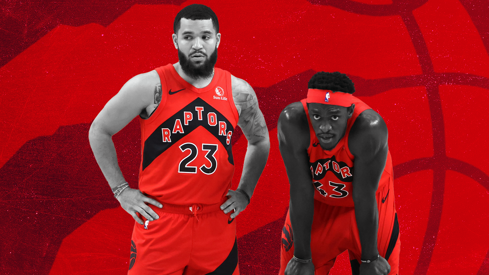

New Raptors, new questions
The Toronto Raptors are entering a new phase of their franchise, but where to from here?
Sean Carroll illustration
T he Raptors are back... in Toronto that is.
It remains to be seen whether they are actually back in competitive contention in the Eastern Conference landscape. 19 months: that’s how long it’s been since the Raptors played a home game at Scotiabank Arena in Toronto, Ontario Canada. Wild, right?
The current roster looks a bit different since then, as only four players — Fred VanVleet, Pascal Siakam, OG Anunoby and Chris Boucher — were on the team the last time the Raptors played an actual home game in the Six.
Does anyone remember that game against the Hornets? Here’s OG Anunoby’s impeccable analysis of the match:
“It was early March, or end of February,” Anunoby said. “We played the Hornets here. We lost.”
Hilarious monotone stuff as always by the fifth-year forward. But the message is clear, the Raptors are looking towards a fresh era in Toronto. And with that, new leaders and a new style of play.
Franchise icon Kyle Lowry headed to South Beach to join the Miami Heat this offseason and Serge Ibaka and Marc Gasol left for La La Land with the Clippers and Lakers respectively the year prior. Even Norman Powell was moved at last year’s trade deadline for the younger Gary Trent Jr (who re-signed with the Raptors on a three-year, 54-million-dollar contract).
The team is without those consistent veteran safety nets that have been there for years. The quintessential Raptor names that have held the squad steady during the tough times of games and season overall are no more. Goran Dragić fits the mould for this campaign but chances are he’ll be moved, most likely to a contender, during the year.
The team now rests on the leadership of Fred VanVleet, Anunoby and Pascal Siakam, to carry them to some relevance in the Eastern Conference. The three will be acquainted with the pressure quite early, as the NBA holds off for no one.
Growing pains are inevitable but more likely than not the VanVleet-Anunoby-Siakam trio has absorbed the knowledge and tutelage from their previous veteran mentors. These youngins have been tested through wins and losses *cough* LeBron and the Cavs *cough*. They’ve faced tough moments through multiple playoff runs – and each has contributed in some fashion. Like it or not, they will be forced to feel the flames of pressure like ever before.
Things are different this year though. The makeup of the roster is different from any portion of the We The North era through the mid-to-late 2010s.
6’8” and 7’2” are two measurements you’re going to hear quite often this season regarding the Raptors…as well as the words; length and athleticism.
Height and wingspan is the vision of the Raptors this season.
Toronto has leaned in hard to the modern thought of having a roster full of players who can guard multiple positions, handle the ball to at least a fair degree, and shoot…to a fair degree. Multifaceted, multidimensional, multi-whatever – positionless basketball, that’s the style they are trying to create.
Hard to go wrong with that blueprint – Masai Ujiri and general manager Bobby Webster have set up the Raptors for success in the new age of the NBA. Luck has a bit to do with it too. Because in all honesty, how did this team come together? The Raptors began the offseason with roughly seven or eight contracts and no bigs on the roster other than Chris Boucher, Aron Baynes (now waived), Freddie Gillespie (now waived) and Siakam.
Just look at the Raptor's roster now.
The team has seven rotational players that are in the realm of the aforementioned sweet spot of 6’8” and above. Now that is a tantalising group – especially for head coach Nick Nurse, who loves delivering outside-the-box maneuvers. The Raptors could play a lineup consisting of Scottie Barnes, Siakam, Anunoby, Precious Achiuwa, and Khem Birch. Wild stuff, right? And honestly, it’s not out of the realm of possibility.
Obviously, VanVleet will take part in a lineup like this and will be tasked with heading the role of point guard. But preseason has provided us with a glimpse that that might not be the full case for the majority of possessions.
There is enough ball-handling with that all 6’8” lineup to maintain a decent level of composure from pressuring defences. Barnes is accustomed to the role of point guard, albeit at the college level, but through the first couple of preseason games, he’s attempted to control the pace and isn’t scared to have a defender on his hip.
Nick Nurse is feeling himself, and it’s evident in the preseason. He’s played Barnes and Toronto native Delano Banton (both rookies) a *bleep* tonne of minutes initiating the offence. It’s just meaningless preseason games but their play has been solid.
Defensively, what’s wrong with the Raptors just implementing a zone for long stretches? Picture all five linking arms and acting as a fully synchronised defensive organism. Who would be able to penetrate the paint against that wall?
Toronto built a reliable defence against Giannis Antetokoumpo and the Milwaukee Bucks back in the 2019 playoffs. Now, this lineup could work similarly and do some damage. The switchability and dynamism are something else. This lineup also has the athleticism to close out to shooters on the wings and corners while also being able to recover to paint. The passing lanes will be constantly patrolled by Raptor arms.
The downside for the Raptors this year is there is no one to guard the quintessential BIGS of the league – especially within their own Atlantic Division. The Sixers boast Joel Embiid and newly added Andre Drummond, the Celtics (though not filled with star-powered centres) have the annoying and crafty Al Horford and Enes Kanter. The Nets’ Blake Griffin and LaMarcus Aldridge are always a handful, and even the Knicks’ Julius Randle can bully his way to the rim against anyone.
Are the Raptors hooped? Not necessarily. Is it likely that their opponents fully disregard utilising their star guards and forwards and go full tilt into getting two-pointers around the rim from their bigs? For chunks of possessions, yes. But not for the entirety of a game. The Raptors could easily switch the role on their opponent too and continually hunt out a mismatch themselves.
Another concern relating to facing larger teams is the rebounding component. The previously mentioned synchronised organism will need to cohesively box out their assignments to secure the ball and cause some damage in the open floor. This area will take some time, and won’t be implemented to a degree of smoothness until the later end of the season.
Another clog in all this hypothetical is that the Raptors are missing a big piece that will be key to their success this year. Siakam is still working through a shoulder injury that has him sidelined for a large chunk of the beginning of the season. So, the big question mark will be how does this team transition from the Siakam-less period, to the Siakam as a focal point period?
Honestly, I don’t think anything will drastically change. Will there be some bumps in the transition? Obviously. But Nurse wants to implement an everyone eats style of play so that the other team doesn’t know where the offence is coming from. That is the better tactic for Siakam to excel. He’s not the one-on-one dominator, he thrives in the chaotic flow of ball and player movement.
Anunoby’s offensive arsenal and contribution look to be on the upswing, so the pre-Siakam period will be headed by a similar player who has been given the green light to hoist and attack. The supplementary players will get some form of acclimatization to a Siakam-like player until he returns.
All these question marks will be answered in stages throughout the season. It’s truly difficult to pinpoint how this team will unfold with the amount of change and the new direction they have taken. The only true safe take to make is that it’s good to have the Raptors back home in Toronto.